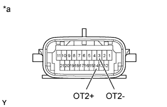
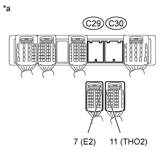

DTC P2742 Transmission Fluid Temperature Sensor "B" Circuit Low Input |
DTC P2743 Transmission Fluid Temperature Sensor "B" Circuit High Input |
| No. 2 ATF Temperature Sensor State | Detection Condition | Symptom | Recovery Condition |
| Sensor is normal | ATF temperature higher than 150°C (302°F) | Message is displayed on multi-information display | ATF temperature below 135°C (275°F)*1 |
| ATF temperature higher than 130°C (266°F) | Shift point too high | ATF temperature below 110°C (230°F) | |
| When conditions (a) and (b) are satisfied. (a) ATF temperature higher than 130°C (266°F) (b) Engine coolant temperature higher than 95°C (203°F) | Lock-up in 3rd gear*2 | ATF temperature below 110°C (230°F)*1 and engine coolant temperature higher than 95°C (203°F) | |
| Sensor is short-circuited | Any conditions |
| Symptoms persist |
| Engine coolant temperature higher than 95°C (203°F) | Lock-up in 3rd gear*2 | Symptoms persist |
| DTC Code | DTC Detection Condition | Trouble Area |
| P2742 | No. 2 ATF temperature sensor resistance is below 25 Ω (0.046 V) for 0.5 seconds or more (1-trip detection logic). |
|
| P2743 | One of the following conditions is met (1-trip detection logic): (A) 15 min. or more have elapsed after the engine start when the engine coolant temperature or intake air temperature is -29.375°C (-20.875°F) or less, and the ATF temperature sensor resistance is higher than 156 kΩ (4.915 V) for 0.5 sec. or more. (B) 10 sec. or more have elapsed after the engine start when the engine coolant temperature and intake air temperature are higher than -29.375°C (-20.875°F), and the ATF temperature sensor resistance is higher than 156 kΩ (4.915 V) for 0.5 sec. or more. |
|
| DATA LIST |
Warm up the engine.
Turn the engine switch off.
Connect the intelligent tester to the DLC3.
Turn the engine switch on (IG).
Turn the intelligent tester on.
Enter the following menus: Powertrain / Engine and ECT / Data List.
According to the display on the tester, read the Data List.
| Tester Display | Measurement Item/Range | Normal Condition | Diagnostic Note |
| A/T Oil Temperature 2 | No. 2 ATF temperature sensor value/ Min.: -40°C (-40°F) Max.: 215°C (419°F) |
| If the value is -40°C (-40°F) or 215°C (419°F), the No. 2 ATF temperature sensor circuit is open or shorted. |
| Temperature Displayed | Malfunction |
| -40°C (-40°F) | Open circuit |
| 150°C (302°F) or higher | Short circuit |
| 1.INSPECT TRANSMISSION WIRE (NO. 2 ATF TEMPERATURE SENSOR) |
|  |
Disconnect the C24 transmission wire connector.
Measure the resistance according to the value(s) in the table below.
| Tester Connection | Condition | Specified Condition |
| 3 (OT2-) - 14 (OT2+) | Always | 25 Ω to 156 kΩ |
| 3 (OT2-) - Body ground | Always | 10 kΩ or higher |
| 14 (OT2+) - Body ground | Always | 10 kΩ or higher |
| ATF Temperature | Specified Condition |
| 10°C (50°F) | 5 to 8 kΩ |
| 25°C (77°F) | 2.5 to 4.5 kΩ |
| 110°C (230°F) | 0.22 to 0.28 kΩ |
| *a | Component without harness connected (Transmission Wire) |
|
| ||||
| OK | |
| 2.CHECK HARNESS AND CONNECTOR (TRANSMISSION WIRE - ECM) |
|  |
Disconnect the C29 and C30 ECM connectors.
Measure the resistance according to the value(s) in the table below.
| Tester Connection | Condition | Specified Condition |
| C30-11 (THO2) - C29-7 (E2) | Always | 25 Ω to 156 kΩ |
| C30-11 (THO2) - Body ground | Always | 10 kΩ or higher |
| C29-7 (E2) - Body ground | Always | 10 kΩ or higher |
| *a | Front view of wire harness connector (to ECM) |
|
| ||||
| OK | ||
| ||